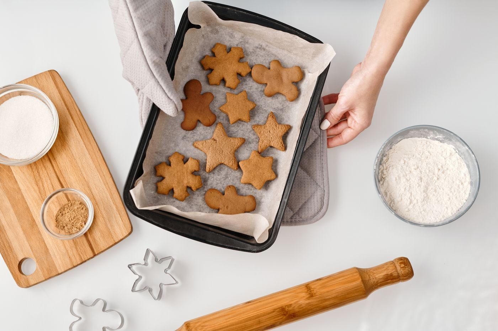

The woman at the stall
My grandmother sold roasted almonds at the Christkindlmarkt for thirty years, and the heart stall next to hers let me pipe borders when I was twelve — badly, on the broken hearts, which is where everyone in this trade starts. I trained as a Konditorin, spent two seasons in Nuremberg, where Lebkuchen is a serious matter, and came home to Munich to make the one thing I had missed there: the big fair hearts, with your own words on them.

Four things make a heart
The dough rests six weeks
Honey, rye and wheat flour, Lebkuchen spice, and the old leavenings — potash and baker's ammonia — mixed in high summer and left alone. Fresh Lebkuchen dough bakes up harsh; rested dough bakes round and deep. Every heart I sell in autumn was mixed before the Wiesn tents went up.
The bake stays soft
Hearts are rolled a good centimetre thick and baked hot and short, so the middle stays soft and the edges just set. A heart that snaps like a biscuit was rolled too thin or left too long — at a fair you bite through the ribbon crowd, and the heart has to give, not fight back.
The lettering is one breath per word
Royal icing, a paper cornet, nozzles nowhere near it. You pipe a word in one breath or the line wobbles — that is the whole technique, and it takes a season to learn. I sketch every commission on paper first, count the characters against the heart, and only then pick up the cornet.
The ribbon is part of the gift
Two holes, baked in — never drilled after — and a ribbon long enough to wear. Wrapped hearts keep six to eight weeks cool and dry and stay good eating; unwrapped show hearts hang for years. If yours softens in a steamy kitchen, ten minutes in a low oven brings the snap back.
The short version, for the record
Konditorin training in Munich · two seasons with a Nuremberg Lebkuchen bakery · own stall at the Christkindlmarkt since 2012 · Wiesn crew and tent orders since 2015 · every heart on this site piped by my hand or my one apprentice, whose name I check as carefully as yours.